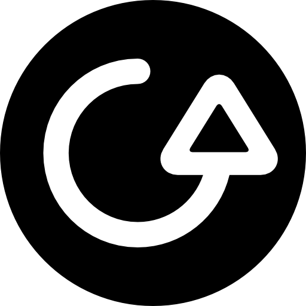

An agent of the North York Order Regiment, an agency in the new universe
who protect their city from Taliban invasions. He and his friend Richard
go on missions to make quick cash, but unfortunately realize what a mess
they've gotten themselves into after learning about the secrets of the
Cassida Shard and the not-so secret room in the Royal Ontario Museum.
Artwork done by Richard Ma
